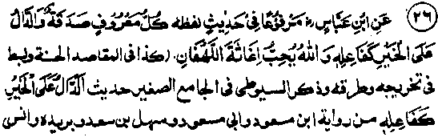

Chapter One · Section (b): Ahadith on the virtues of spending for the cause of Allah
22. Every virtue is Sadaqah
Hadith 26

Rasulullah Sallallaho alaihe wasallam has said, "Every good deed is Sadaqah and to encourage someone to a good deed brings the same reward for the encoura-ger as a good deed done by himself. Allah Ta'ala loves the help given to people in adversity.
Note: This Hadith contains three subjects:-
One, every good deed is Sadaqah. It means that for Sadaqah, spending of money is not the only way, nor is it confined to giving something. A Hadith says that there are three hundred and sixty joints in human body, and it is essential that a Sadaqah be given for each joint everyday. The Sahabah submitted that no one has the capacity to give that much Sadaqah everyday. Rasulullah Sallallaho alaihe wasallam replied, "Removing of spittle from the Masjid counts as Sadaqah, removing a harmful thing from the road is an act of Sadaqah) if nothing else can be done, two RakaJat of Salaat in the fore-noon (Salaat-ud-Dhuhaa) will suffice you (since every joint is engaged in Salaat)". Another Hadith says: "Everyday the sun rises, an act of Sadaqah becomes due from every person for every joint in his body. If one makes a just settlement between two persons, it amounts to Sadaqah; if one helps a man in mounting, loading or unloading his beast, it is Sadaqah; reciting 'Kalimah Tayyebah’ is Sadaqah; every step taken to go for Salaat is Sadaqah; to remove a troublesome thing from the road is an act of Sadaqah". Another Hadith says, "Every one must give Sadaqah everyday for each joint in his body. Every Salaat is Sadaqah, fasting is Sadaqah, performing Hajj is Sadaqah, saying(Allah be glorified) is Sadaqah,
saying 1(All praise to be Allah!) is Sadaqah, saying (Allah is Great) is Sadaqah". Another Hadith says, "Greeting everybody you meet on the way with Assalaam-o-alaikum counts as Sadaqah, enjoining what is good or forbidding what is bad counts as Sadaqah". (Abu Dawood). There are several other Ahadith from which it becomes clear that every good deed and each act of kindness
'ts as Sadaqah, provided the intention is to please Allah Ta'ala.